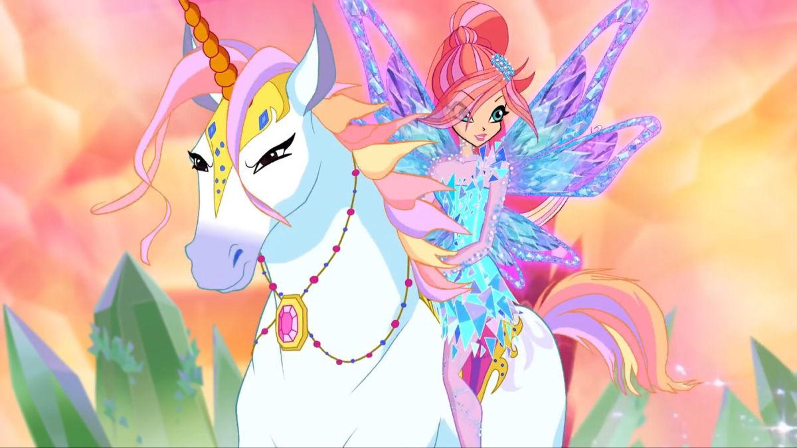
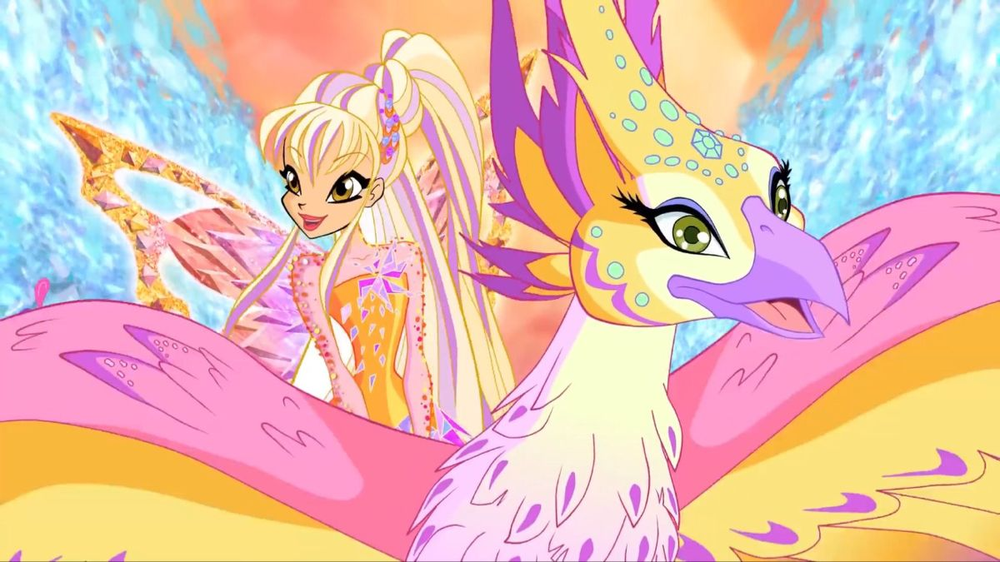
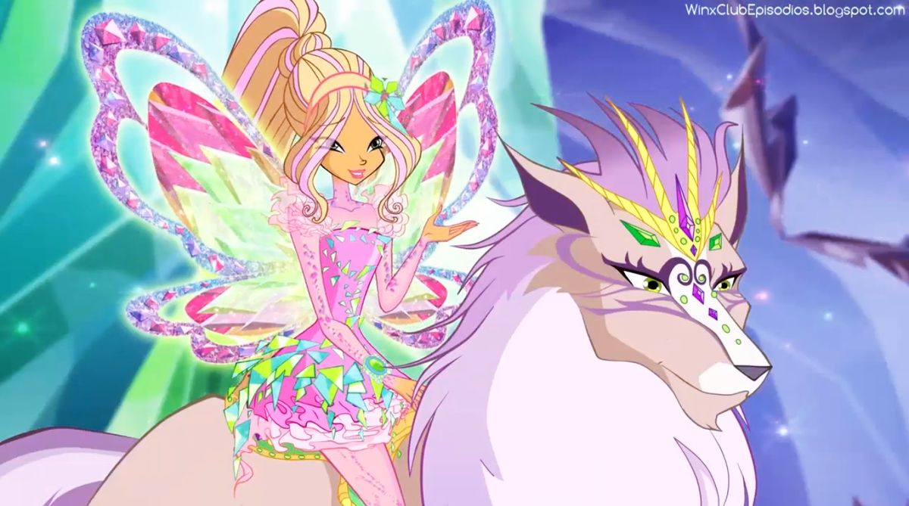
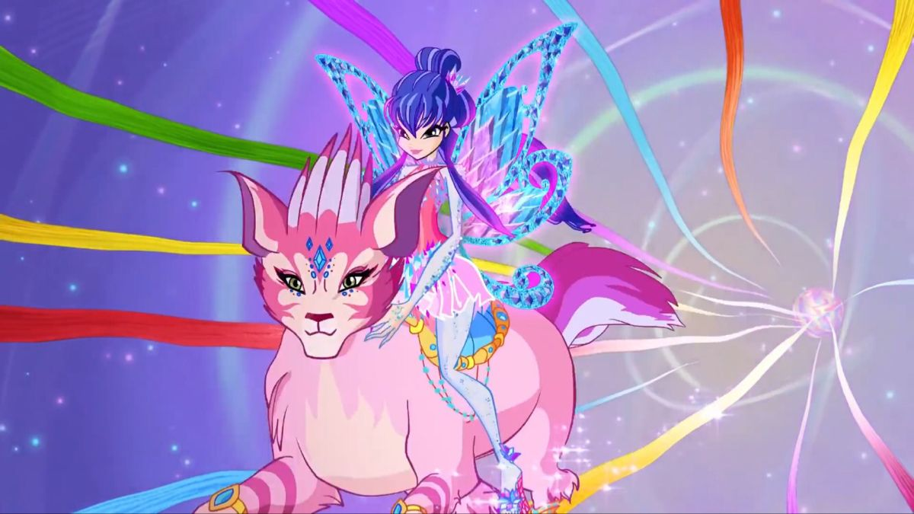
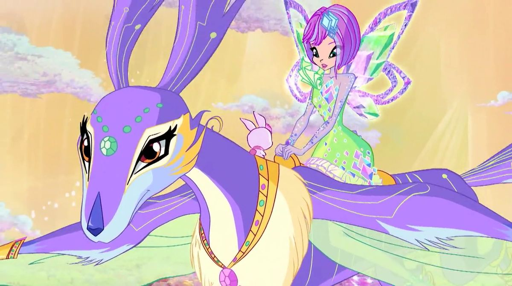
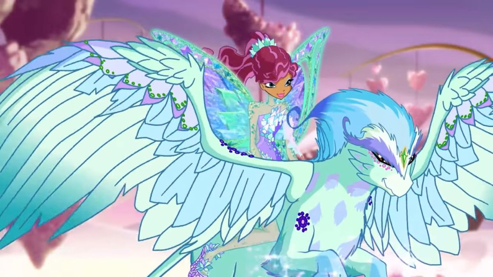

O Unicórnio macho. É o maior animal, chegando ao peito de Bloom, que o encontrou na China. É branco, com um desenho de labareda nas costas e na frente das patas. Os cascos são cor-de-rosa; a crina é densa, dourada com mechas rosa. É o animal mais poderoso e pode usar seu chifre para realizar várias magias. O chifre começa com a cor bronze, evoluindo para prata e ouro, aumentando seu poder. Quando está nos Mini-Mundos, Elas fica bem maior, parecendo mais um cavalo, com jóias e peças de ouro espalhadas pelo corpo. Sua sela é vermelha. A palavra portuguesa “elãs” significa “ímpeto”.

É uma Esplendiave, similar a uma fênix. É o terceiro maior animal, do tamanho de uma águia. É dourada, com crista, cauda e pontas das asas laranja; bico vermelho; o peito tem um tufo de penas rosa. Possui um temperamento similar ao de Stella, é vidrada de Brandon e em coisas que brilham, e se alimenta de pedras preciosas. Quando está nos Mini-Mundos, Shiny cresce bastante para poder ser montada por Stella e sua plumagem fica mais exuberante. Shiny é uma palavra inglesa que significa “brilhante”, “luminoso”.

É o Magilobo. É o segundo maior animal, vive em Linphea. É marrom claro com detalhes brancos. O pêlo do pescoço é branco, com mechas roxo claro. É um animal brincalhão e muito forte, ao ponto de ser destrutivo. Quando está nos Mini-Mundos, Amarok não muda muito. Sua sela é verde e possui jóias verdes e roxas pelo corpo e adornos dourados. O Amarok é um lobo gigante cinza da mitologia inuit. Ora surge nas lendas perseguindo e devorando caçadores solitários; ora ajudando pessoas. A maioria das aparições é noturna e cercada de terror.

Critty, o Pluma-Gato (Quillcat ou pladanagem) fêmea. É o segundo menor animal. É rosa com linhas e mechas magenta; orelhas e cauda roxas - com um sino oriental na ponta da cauda, junto com um laço. Possui espinhos pelo corpo, que Critty atira contra suas vítimas, mas não tão bem quanto Hélia. Quando está nos Mini-Mundos, Critty vira uma la de duas caudas com expressão feroz. Possui algumas pedras azuis cravejadas no rosto e sua sela também é azul.

Flitter, o Tecnoesquilo macho, um esquilo voador. É o menor animal. É roxo com detalhes brancos e verde claros, orelhas azuis. Usa um par de óculos de nadador. Vive no centro de Zenith, estabilizando a energia do núcleo do planeta. É muito veloz e prestativo (sabe fazer reparos em artigos tecnomágicos). Quando está nos Mini-Mundos, Flitter fica muito alto e magro com diversas jóias espalhadas pelo corpo. Flitter é a palavra inglesa que significa “esvoaçante”, devido ao fato de o animal planar.

O Chororão (cry-cry) macho. Possui o pêlo verde piscina claro, com desenhos de gotas em um tom mais escuro, um tufo de pêlo branco na cabeça e sobrancelhas verde (os outros chora-choras que aparecem no desenho são bem diferentes). Quando magoado, chora grandes quantidades de água, com efeito devastador. É um dos mais antigos animais fada, porém está extinto, existindo apenas na pré-história de Magix. Quando está nos Mini-Mundos, Squonk sofre a transformação mais dramática, virando uma espécie de grifo. Possui um grupo de pedras roxas no ombro direito e sua sela também é roxa.
💫
🫧
✨